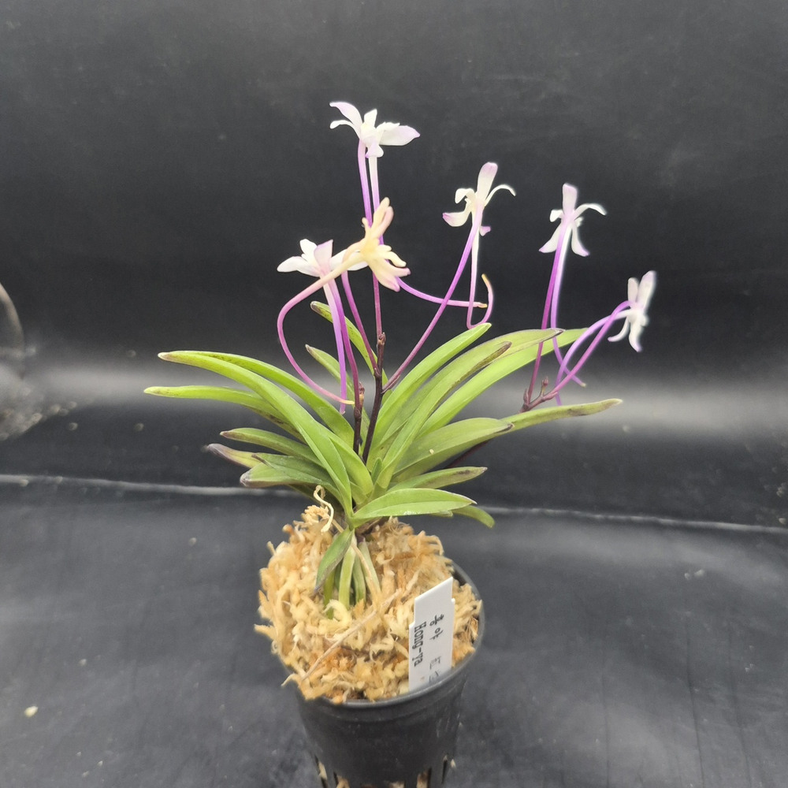
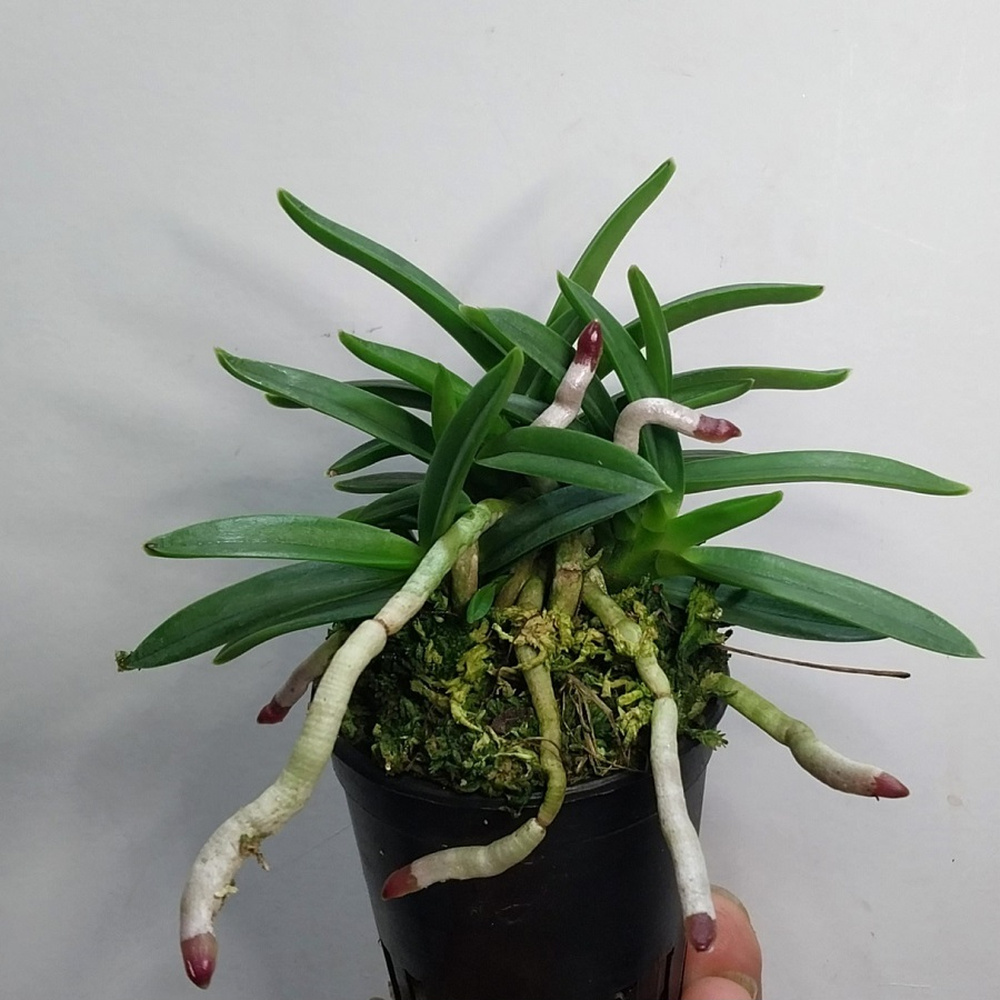
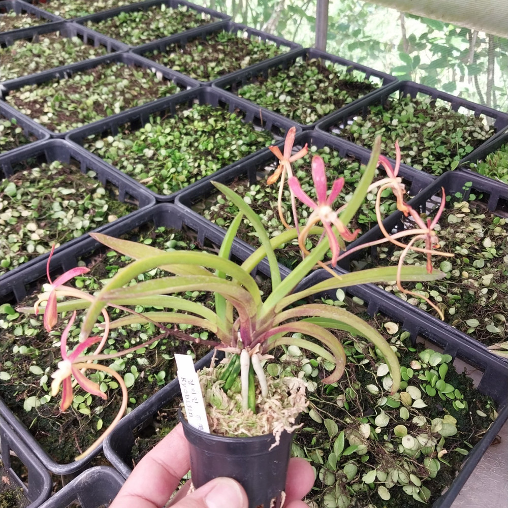
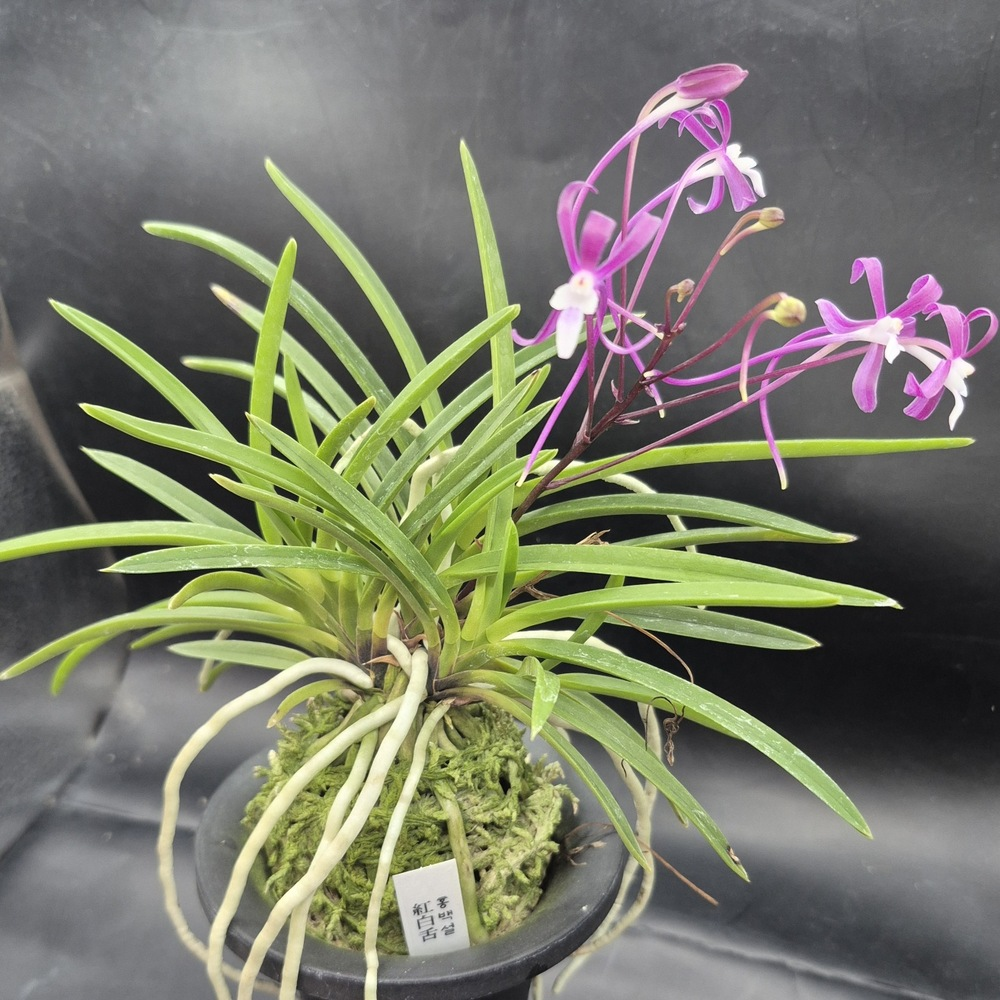

CSFART
숯돌꽃 난농원
CSFART 상품 안내
무지
호·중반
복륜
특예
호반
화물
입문·기타란
석곡
자재
옆으로 밀면 메뉴가 더 있어요 ›
CSFART COLLECTION
화물

화물 상품

뇌산(雷山) 0001 · 적화계 풍란
20,000원
적화 · 니축·니근·월형 붙음매

경미인 0001 · 복색화 소엽 풍란
20,000원
화물 · CSFART경미인_0001

홍백설(紅白雪) 0001
화물 · CSFARTHB0001
홍야(紅夜) 0001 · 풍란 색화
10,000원
분홍빛 색화 · CSFART홍야_0001
홍풍(紅楓) 0001 · 향기 있는 적화
20,000원
비개화 판매 개체 · CSFART홍풍_0001